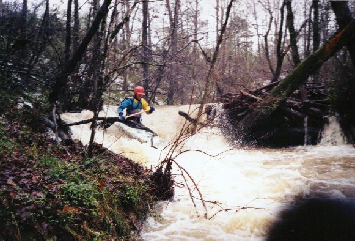
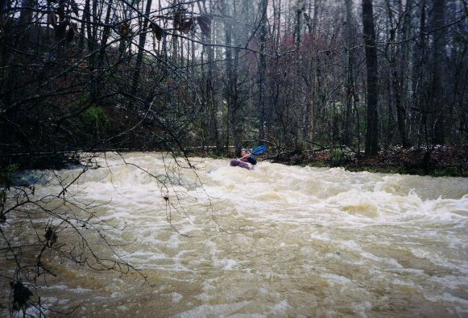
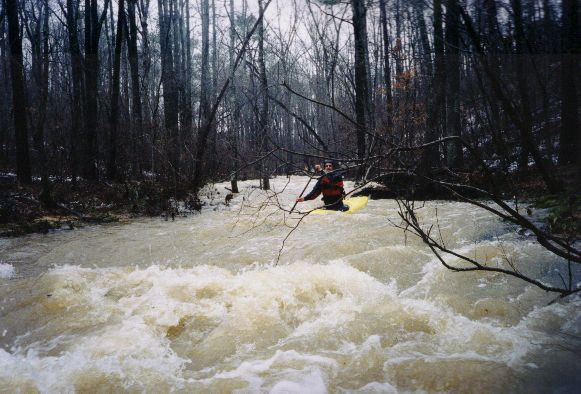
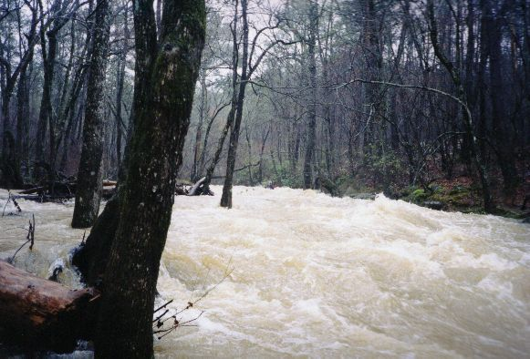
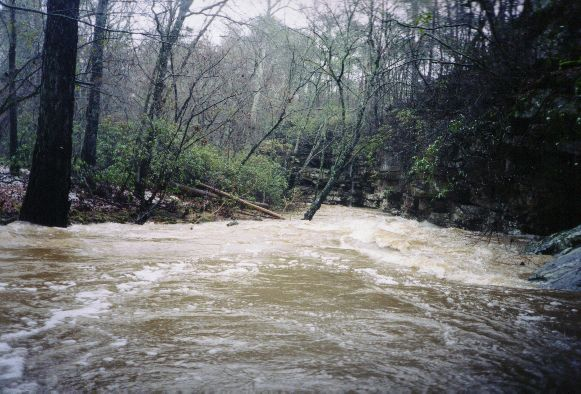

|  | Mark D' runs the second logjam drop. |
|  | Kevin Cunningham in a typical conveyor belt section looking to catch an eddy. Note the snow on shore. |
|  | Gary Holder in the narrow upper part. |
|  | As you get farther down and pass a major tributary, if the water is high, it will rock. |
|  | Though there are few rocks at high water, as you get nearer to the Mulberry, there are a few bluffs. |